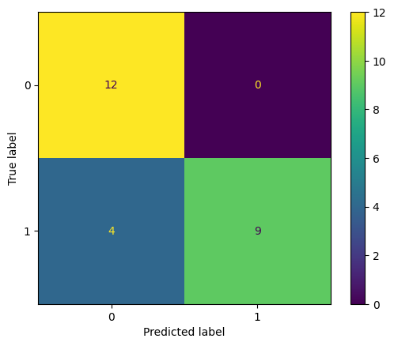
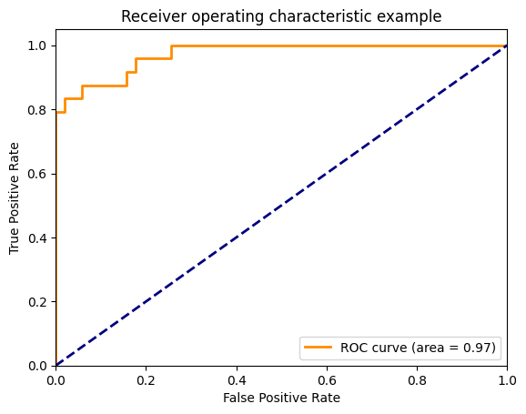

from sklearn.metrics import confusion_matrixModel performance measurement
The aim of this exercise was to change various parameters and observe the effect on R squared and AUC (area under the curve).
Observations and reflections are included in the notebook below and are clearly marked with author initials (SJ). Additionally learning notes were added.
One key observation was that the randomness of the data split could affect results. Code was added at the end to see how large the Iris dataset was, results show a total of 150 rows. As test size was set to 0.5 this meant that we had 75 rows in each of train and test sets. With larger data sets we may expect that the observed effect of differences in the results based on random_state value, would be minimised.
tn, fp, fn, tp = confusion_matrix([0, 1, 0, 1], [1, 1, 1, 0]).ravel()
(tn, fp, fn, tp)(np.int64(0), np.int64(2), np.int64(1), np.int64(1))SJ: From the data provided we can see in the output that we have zero true negatives, two false positives (1, 0), one true positive (1,1) and one false negative (0,1)
import matplotlib.pyplot as plt
from sklearn.datasets import make_classification
from sklearn.metrics import confusion_matrix, ConfusionMatrixDisplay
from sklearn.model_selection import train_test_split
from sklearn.svm import SVC
X, y = make_classification(random_state=15) # creates a synthetic binary data set; changes random_state alters output
X_train, X_test, y_train, y_test = train_test_split(X, y,
random_state=0) #divides data set in to test train splits
clf = SVC(random_state=0)
clf.fit(X_train, y_train) # trains model
SVC(random_state=0)
predictions = clf.predict(X_test) # use trained model to make predictions on tet set
cm = confusion_matrix(y_test, predictions, labels=clf.classes_)
disp = ConfusionMatrixDisplay(confusion_matrix=cm,
display_labels=clf.classes_)
disp.plot()
plt.show()
SJ: The confusion matrix shows that with above seed we have 12 true negatives, 4 false negatives, 9 true positives and 0 false positives.
F1, Accuracy, Recall, AUC and Precision scores
from sklearn.metrics import f1_score
y_true = [0, 1, 2, 0, 1, 2]
y_pred = [0, 2, 1, 0, 0, 1]
print(f"Macro f1 score: {f1_score(y_true, y_pred, average='macro')}")
print(f"Micro F1: {f1_score(y_true, y_pred, average='micro')}")
print(f"Weighted Average F1: {f1_score(y_true, y_pred, average='weighted')}")
print(f"F1 No Average: {f1_score(y_true, y_pred, average=None)}")
y_true = [0, 0, 0, 0, 0, 0]
y_pred = [0, 0, 0, 0, 0, 0]
f1_score(y_true, y_pred, zero_division=1)
# multilabel classification
y_true = [[0, 0, 0], [1, 1, 1], [0, 1, 1]]
y_pred = [[0, 0, 0], [1, 1, 1], [1, 1, 0]]
print(f"F1 No Average: {f1_score(y_true, y_pred, average=None)}")Macro f1 score: 0.26666666666666666
Micro F1: 0.3333333333333333
Weighted Average F1: 0.26666666666666666
F1 No Average: [0.8 0. 0. ]
F1 No Average: [0.66666667 1. 0.66666667]SJ:
Macro F1 score (0.26 in example) calculates F1 score in each class and provides the unweighted average
Micro F1 score calculates overall F1
Weighted Average F1 calculates score for each class and provides an average that is weighted based on the number of samples in that class - useful if classes are imbalanced and we want to weight towards majority classes
F1 no average provides the score for each class seperately.
from sklearn.metrics import accuracy_score
y_pred = [0, 2, 1, 3]
y_true = [0, 1, 2, 3]
accuracy_score(y_true, y_pred)0.5from sklearn.metrics import precision_score
y_true = [0, 1, 2, 0, 1, 2]
y_pred = [0, 2, 1, 0, 0, 1]
precision_score(y_true, y_pred, average='macro')0.2222222222222222SJ: precision = true positives / (true positive + false positive). Above score is based on macro average.
from sklearn.metrics import recall_score
y_true = [0, 1, 2, 0, 1, 2]
y_pred = [0, 2, 1, 0, 0, 1]
recall_score(y_true, y_pred, average='macro')0.3333333333333333SJ: Recall = true positive / (true positive + false negative). Again the macro average is shown
from sklearn.metrics import classification_report
y_true = [0, 1, 2, 2, 2]
y_pred = [0, 0, 2, 2, 1]
target_names = ['class 0', 'class 1', 'class 2']
print(classification_report(y_true, y_pred, target_names=target_names)) precision recall f1-score support
class 0 0.50 1.00 0.67 1
class 1 0.00 0.00 0.00 1
class 2 1.00 0.67 0.80 3
accuracy 0.60 5
macro avg 0.50 0.56 0.49 5
weighted avg 0.70 0.60 0.61 5
from sklearn.datasets import load_breast_cancer
from sklearn.linear_model import LogisticRegression
from sklearn.metrics import roc_auc_score
X, y = load_breast_cancer(return_X_y=True)
clf = LogisticRegression(solver="liblinear", random_state=0).fit(X, y)
roc_auc_score(y, clf.predict_proba(X)[:, 1])np.float64(0.994767718408118)#multiclass case
from sklearn.datasets import load_iris
X, y = load_iris(return_X_y=True)
clf = LogisticRegression(solver="liblinear").fit(X, y)
roc_auc_score(y, clf.predict_proba(X), multi_class='ovr')np.float64(0.9913333333333334)import numpy as np
import matplotlib.pyplot as plt
from itertools import cycle
from sklearn import svm, datasets
from sklearn.metrics import roc_curve, auc
from sklearn.model_selection import train_test_split
from sklearn.preprocessing import label_binarize
from sklearn.multiclass import OneVsRestClassifier
from sklearn.metrics import roc_auc_score
# Import some data to play with
iris = datasets.load_iris()
X = iris.data
y = iris.target
# Binarize the output
y = label_binarize(y, classes=[0, 1, 2])
n_classes = y.shape[1]
# Add noisy features to make the problem harder
random_state = np.random.RandomState(0)
n_samples, n_features = X.shape
X = np.c_[X, random_state.randn(n_samples, 1 * n_features)]
# shuffle and split training and test sets
X_train, X_test, y_train, y_test = train_test_split(X, y, test_size=0.5, random_state=0)
# Learn to predict each class against the other
classifier = OneVsRestClassifier(
svm.SVC(kernel="linear", probability=True, random_state=random_state)
)
y_score = classifier.fit(X_train, y_train).decision_function(X_test)
# Compute ROC curve and ROC area for each class
fpr = dict()
tpr = dict()
roc_auc = dict()
for i in range(n_classes):
fpr[i], tpr[i], _ = roc_curve(y_test[:, i], y_score[:, i])
roc_auc[i] = auc(fpr[i], tpr[i])
# Compute micro-average ROC curve and ROC area
fpr["micro"], tpr["micro"], _ = roc_curve(y_test.ravel(), y_score.ravel())
roc_auc["micro"] = auc(fpr["micro"], tpr["micro"])SJ:
For this exercise noisy feature were increased and decreased in order to observe the effect on the AUC, aditionally random:state was altered to demonstrate variability in output depending on data split and inherent variation resulting from this.
plt.figure()
lw = 2
plt.plot(
fpr[2],
tpr[2],
color="darkorange",
lw=lw,
label="ROC curve (area = %0.2f)" % roc_auc[2],
)
plt.plot([0, 1], [0, 1], color="navy", lw=lw, linestyle="--")
plt.xlim([0.0, 1.0])
plt.ylim([0.0, 1.05])
plt.xlabel("False Positive Rate")
plt.ylabel("True Positive Rate")
plt.title("Receiver operating characteristic example")
plt.legend(loc="lower right")
plt.show()
SJ: Observations
Original code ROC curve = 0.79; if increased the noisy features e.g. X = np.c_[X, random_state.randn(n_samples, 300 * n_features)] then AUC decreased. This is expected as more random variation has been introduced in to the data. Interestingly, decreasing the noisy features to 100 gave an AUC of 0.76 which was less than when 200 was used and indicated that the model was worse than when there were more noisy features, however this was due to the random_state parameter in the train_test_split, which controls where the data was split. If random_split was chaged to = 3 then the AUC rose to 0.87. This demonstrates that there is inherent variation in the result depending on how the train_test split is made and the resulting variation within those groups. When noisy features were reduced to 1 * n_feautures the AUC was 0.97, indicating that the model has both good sensitivity and specificity.
from sklearn.metrics import log_loss
log_loss(["spam", "ham", "ham", "spam"], [[.1, .9], [.9, .1], [.8, .2], [.35, .65]])0.21616187468057912Regression metrics
RMSE
from sklearn.metrics import mean_squared_error
y_true = [3, -0.5, 2, 7]
y_pred = [2.5, 0.0, 2, 8]
mean_squared_error(y_true, y_pred)0.375MAE
from sklearn.metrics import mean_absolute_error
y_true = [3, -0.5, 2, 7]
y_pred = [2.5, 0.0, 2, 8]
mean_absolute_error(y_true, y_pred)0.5r squared
SJ:
R squared indicated the proportion of the dependent variable that can be predicted by the independent variable. A value closer to 1 means that the model is very good.
In the provided code R squared = 0.948, this means that the model was very good. As expectedm, if we changed the code so that the values of y_true and y_pred were closer together (i.e. reduced the MSE/MAE) then the r squared value increased as the true value of y was closer to the predicted value of y. If the numbers were changed to be further apart then r squared decreased.
from sklearn.metrics import r2_score
r2_score(y_true, y_pred)0.9486081370449679print(f"Total number of rows in the dataset: {X.shape[0]}")
print(f"Number of rows in the training set: {X_train.shape[0]}")
print(f"Number of rows in the test set: {X_test.shape[0]}")Total number of rows in the dataset: 150
Number of rows in the training set: 75
Number of rows in the test set: 75